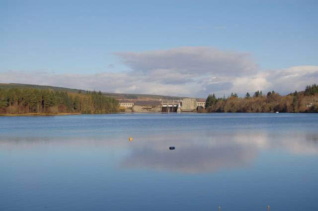

스코틀랜드 SSEN 트랜스미션, 송전설비 인근 주민에게 162만 파운드 지역기금 설계 의견 묻는다

레어그·로가트 주민 대상 설문 11월 16일~12월 14일, 설명회 3회…'사우스 로크신 지역기금'은 2027년 문 열 예정
스코틀랜드 북부 송전망 사업자 SSEN 트랜스미션(SSEN Transmission)이 로크신(Loch Shin) 남쪽 끝 송전설비 인근 주민에게 새 지역기금의 설계 의견을 묻는다. '사우스 로크신 지역기금(South Loch Shin Local Fund)'은 예상 총액이 162만 파운드로, 레어그(Lairg) II 풍력단지와 클레안세이드(Chleansaid) 풍력단지 연결에 따른 변전소 2곳, 새 가공 송전선과 관련한 지역 편익 자금을 합쳐 영국 정부 지침에 따라 산정했으며 2027년 문을 열 예정이다. 의견수렴은 11월 16일(월)부터 12월 14일(월)까지 설문으로 받고, 11월 18일(수) 로가트(Rogart) 마을회관, 19일(목) 레어그 주민센터에서 현장 설명회를, 23일(월) 오후 7시 온라인 설명회를 연다. 묻는 내용은 어느 마을이 혜택을 받을지, 어떤 분야를 우선 지원할지, 지원 기간과 사업별 지원 수준 등 기금을 어떻게 짤지 세 가지다. 이 회사 지역기금 담당 매니저 린지 챌머스(Linsay Chalmers)는 "지역 주민이 자기 마을을 가장 잘 안다"며 주민이 기금 설계의 중심에 서기를 바란다고 말했다.
시민에너지 관점
162만 파운드는 송전설비를 들이는 사업자가 마을에 내놓는 돈이지만, 쓰임새를 정하는 첫 단계부터 주민에게 열어 두었다는 점이 눈에 띈다. 기금이 반대 목소리를 달래는 보상금에 그칠 수 있다는 우려가 있으나, 혜택 대상과 우선 분야, 기금 구조를 주민이 직접 정하게 하면 돈이 마을의 계획과 이어진다. 다만 기금은 설비가 지역에 남기는 이익의 일부일 뿐이어서, 지역과 시민이 사업의 지분과 수익에 직접 참여하는 지역 소유가 더 든든한 답이다. 한국도 송전선로와 발전단지 주변 지원사업을 설계 단계부터 주민에게 열고, 의견수렴 결과와 기금 사용 내역을 공개하기 바란다.
출처: Northern Times 2026-11-10 Caroline McMorran 원문 보기
スコットランドのSSENトランスミッション、送電設備近くの住民に162万ポンドの地域基金の設計について意見を求める
レアーグ・ロガート住民対象のアンケートは11月16日〜12月14日、説明会3回…「サウス・ロッホ・シン地域基金」は2027年開始予定
スコットランド北部の送電事業者SSENトランスミッション(SSEN Transmission)が、ロッホ・シン(Loch Shin)南端の送電設備に近い住民に、新しい地域基金の設計について意見を求める。「サウス・ロッホ・シン地域基金(South Loch Shin Local Fund)」は想定総額162万ポンドで、レアーグ(Lairg)II風力発電所とクレアンセイド(Chleansaid)風力発電所の接続に伴う変電所2か所、新しい架空送電線に関する地域向け資金をまとめ、英国政府の指針に沿って算定したもので、2027年に開始する予定だ。意見募集は11月16日(月)から12月14日(月)までアンケートで受け付け、11月18日(水)にロガート(Rogart)の村の集会所、19日(木)にレアーグのコミュニティーセンターで対面の説明会を、23日(月)午後7時にオンライン説明会を開く。尋ねるのは、どの地域が恩恵を受けるか、どの分野を優先して支援するか、支援期間や事業ごとの支援水準など基金をどう組むか、の3点だ。同社の地域基金担当マネジャー、リンジー・チャルマーズ(Linsay Chalmers)氏は「地元の人が自分たちの地域を一番よく知っている」と述べ、住民が基金設計の中心に立つことを望むと語った。
市民エネルギーの視点
162万ポンドは送電設備を入れる事業者が地域に出す資金だが、使い道を決める最初の段階から住民に開いている点が目を引く。基金が反対の声をなだめる補償金にとどまりかねないとの懸念はあるが、恩恵の対象や優先分野、基金の構造を住民自身が決めれば、お金は地域の計画とつながる。ただし基金は設備が地域に残す利益の一部にすぎず、地域と市民が事業の持ち分と収益に直接参加する地域所有のほうが確かな答えだ。韓国も送電線や発電団地周辺の支援事業を設計段階から住民に開き、意見募集の結果と基金の使途を公開してほしい。
出典: Northern Times 2026-11-10 Caroline McMorran 原文を読む
苏格兰SSEN输电公司就162万英镑地方基金设计征求输电设施附近居民意见
面向莱格、罗加特居民的问卷11月16日至12月14日开放，另有3场说明会…“南欣湖地方基金”预计2027年启动
苏格兰北部输电运营商SSEN输电公司（SSEN Transmission）就一项新的地方基金设计，向欣湖（Loch Shin）南端输电设施附近的居民征求意见。“南欣湖地方基金”（South Loch Shin Local Fund）预计总额为162万英镑，汇集了莱格（Lairg）II风电场和克莱安赛德（Chleansaid）风电场接入工程所涉的2座变电站及新建架空输电线路的地方惠益资金，按英国政府指引测算，预计2027年启动。意见征集通过问卷进行，时间为11月16日（周一）至12月14日（周一）；11月18日（周三）在罗加特（Rogart）村会堂、19日（周四）在莱格社区中心举行现场说明会，23日（周一）晚7点举行线上说明会。征询的内容有三项：哪些社区受益、优先支持哪些领域，以及支持期限和各项目的支持水平等基金如何设置。该公司地方基金经理琳赛·查尔默斯（Linsay Chalmers）说“当地人最了解自己的社区”，希望居民成为基金设计的核心。
市民能源视角
162万英镑是引入输电设施的企业拿给社区的钱，但从决定用途的第一步就向居民敞开，这一点值得注意。有人担心基金只是安抚反对声音的补偿金，但如果受益对象、优先领域和基金结构由居民亲自决定，这笔钱就能与社区自己的规划衔接。不过基金只是设施留给当地的收益的一部分，让地方和市民直接参与项目股权和收益的地方所有，才是更可靠的答案。韩国也应从设计阶段起就向居民开放输电线路和发电园区周边的扶持项目，并公开意见征集结果和基金使用明细。
来源: Northern Times 2026-11-10 Caroline McMorran 查看原文
Scotland's SSEN Transmission Asks Residents Near Its Power Lines to Help Design a 1.62 Million Pound Local Fund
Survey for Lairg and Rogart residents runs from November 16 to December 14 with three sessions; the South Loch Shin Local Fund is due to open in 2027
SSEN Transmission, the transmission network operator in the north of Scotland, is asking residents near its infrastructure at the southern end of Loch Shin to help design a new local fund. The South Loch Shin Local Fund has an expected value of 1.62 million pounds, calculated under UK Government guidance; it pools community benefit money tied to two substations for the Lairg II and Chleansaid wind farm connections and a new overhead line, and is due to open in 2027. The consultation survey runs from Monday, November 16, to Monday, December 14, with in-person sessions at Rogart Village Hall on Wednesday, November 18, and Lairg Community Centre on Thursday, November 19, and an online session at 7 p.m. on Monday, November 23. People are asked three things: which communities should benefit, which priorities the money should support, and how the fund should be structured, including how long support lasts and how much each project can receive. Linsay Chalmers, the company's community fund manager, said "local people know their communities best" and that she wants residents at the heart of shaping the fund.
Citizen Energy View
The 1.62 million pounds comes from the company that is building the infrastructure, but it is notable that residents are given a say from the very first step of deciding how it is spent. Some worry that such a fund is merely compensation to soften opposition, yet when residents themselves decide who benefits, what comes first and how the fund is built, the money connects to the community's own plans. Still, a fund is only a share of the benefit a project leaves behind, and local ownership, where communities and citizens take a direct stake in a project's equity and revenue, is the sturdier answer. Korea should likewise open support programmes around transmission lines and power plant sites to residents from the design stage and publish consultation results and how the money is spent.
Source: Northern Times 2026-11-10 Caroline McMorran Read the original